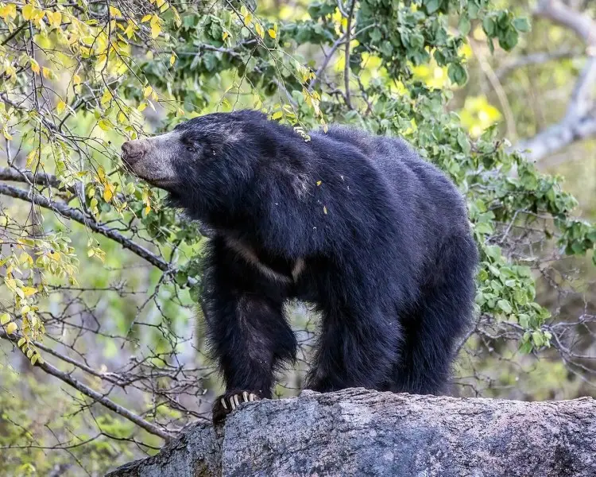
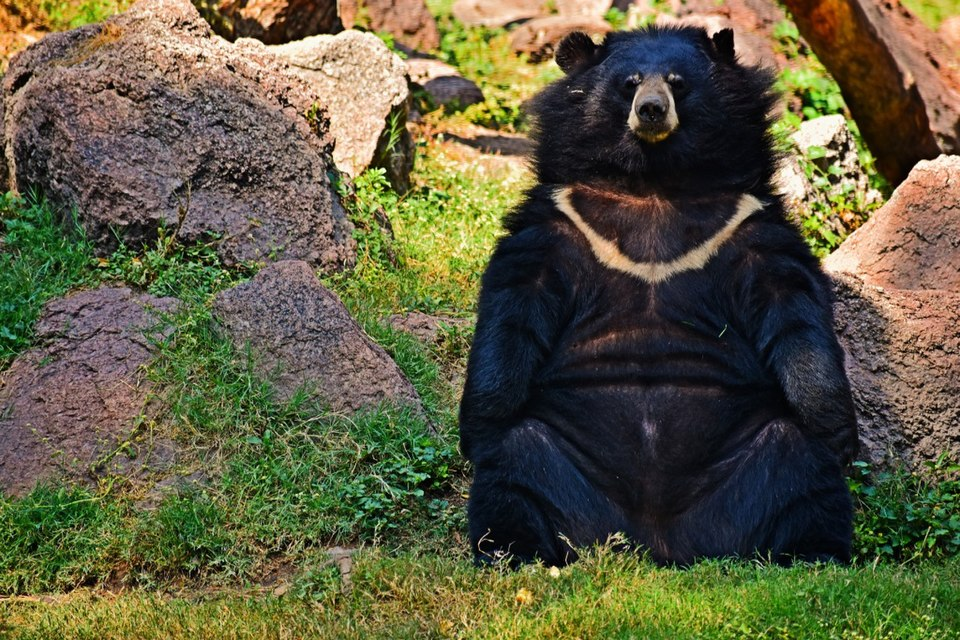
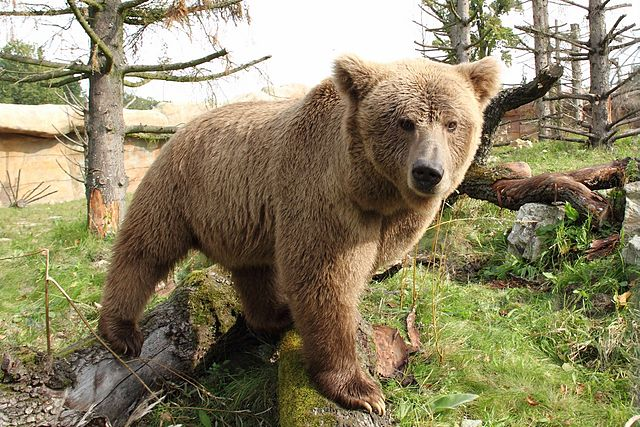

Melursus ursinus
Known to be aggressive when surprised or with cubs. If encountered in forests, maintain distance and back away slowly. Common in Central and Eastern Indian forests, particularly in Madhya Pradesh and Chhattisgarh.

Ursus thibetanus
Distinguished by its black coat and distinctive white crescent on the chest. Found in the Himalayan regions of India, particularly Jammu & Kashmir, Himachal Pradesh, and Arunachal Pradesh. Can be aggressive when threatened and has been known to attack humans when surprised or if cubs are nearby.

Ursus arctos isabellinus
The largest bear species in India, with reddish-brown to sandy-colored fur. Critically endangered, found in high altitude Himalayan regions of Jammu & Kashmir and Himachal Pradesh. Extremely powerful and territorial. If encountered, remain calm, avoid direct eye contact, and back away slowly.